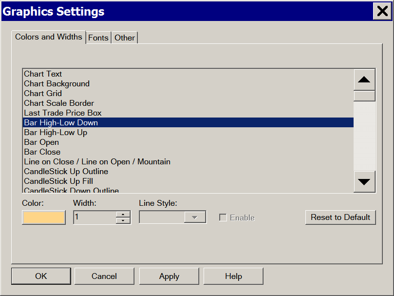
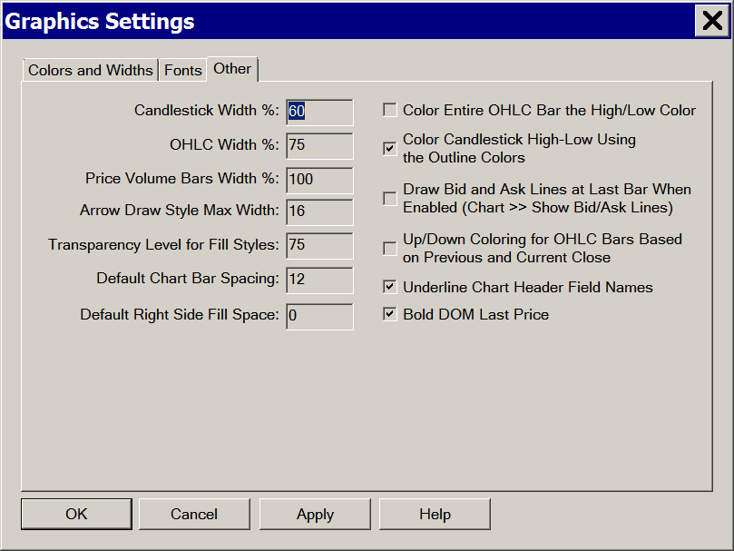

Graphics Settings
- Introduction
- Using Different Color and Graphics Settings for Specific Charts
- Graphics Settings Controls
- Use Global Graphics Settings Instead of These Settings
- Colors and Widths
- Chart Text
- Chart Background
- Chart Grid
- Chart Grid Secondary
- Chart Scale Border
- Chart Selected Tab Color
- Chart Selected Tab Text Color
- Chart Selected Tab Border Color
- Chart Tab Color
- Chart Tab Text Color
- Chartbook Selected Tab Color
- Chartbook Selected Tab Text Color
- Chartbook Tab Color
- Chartbook Tab Text Color
- Last Trade Price Box
- Last Trade Price Box Foreground
- Last Trade Price Box Outline
- Bar High-Low Down
- Bar High-Low Up
- Bar Open
- Bar Close
- Line On Close / Line On Open / Mountain
- Candlestick Up Outline
- Candlestick Up Fill
- Candlestick Down Outline
- Candlestick Down Fill
- Net Change Up
- Net Change Down
- Bid Ask Average Line
- Scroll End Color
- Scroll Not End Color
- Control Bar Enabled Button Text
- Control Bar Disabled Button Text
- Chart Values: Color of the Price and Time Boxes
- Chart Values: Crosshair
- Time and Sales: Bid Trades Background
- Time and Sales: Bid Trades Text
- Time and Sales: Below Bid Trades Background
- Time and Sales: Below Bid Trades Text
- Time and Sales: Ask Trades Background
- Time and Sales: Ask Trades Text
- Time and Sales: Above Ask Trades Background
- Time and Sales: Above Ask Trades Text
- Time and Sales: Bid and Ask Records Trades Background
- Time and Sales: Bid and Ask Records Trades Text
- Time and Sales: Bid Highlight Color
- Time and Sales: Ask Highlight Color
- Study Summary: Background
- Study Summary: Gridlines
- Study Summary: Selected Row
- Study Summary: Alert True Background
- Bid Ask Bar: Large Volume Ask Bar
- Bid Ask Bar: Medium-Large Volume Ask Color
- Bid Ask Bar: Light-Medium Volume Ask Color
- Bid Ask Bar: Light Volume Ask Color
- Bid Ask Bar: Large Volume Bid Color
- Bid Ask Bar: Medium-Large Volume Bid Color
- Bid Ask Bar: Light-Medium Volume Bid Color
- Bid Ask Bar: Light Volume Bid Color
- Market Depth: Bid Gradient Start Color
- Market Depth: Bid Gradient End Color
- Market Depth: Ask Gradient Start Color
- Market Depth: Ask Gradient End Color
- Market Depth: Text Color
- MarketDepth: Background Color
- Spreadsheet Default Text Color
- Spreadsheet Default Background Color
- Spreadsheet Active Cell Border
- Spreadsheet Selection Highlight Color
- Spreadsheet Function Marker Color
- Spreadsheet Comment Marker Color
- Spreadsheet Comment Text Color
- Spreadsheet Comment Background Color
- Spreadsheet Grid
- "Enable" Setting
- Other Settings
- OHLC Width Percentage
- Price Volume Width Percentage
- Arrow Draw Style Max Width (Global Settings >> Graphics Settings >> Other)
- Default Chart Bar Spacing (Global Settings >> Graphics Settings >> Other)
- Default Right Side Fill Space (Global Settings >> Graphics Settings >> Other)
- Color Entire OHLC Bar the High/Low Color (Global Settings >> Graphics Settings >> Other)
- Color Candlestick High-Low Using the Outline Colors (Global Settings >> Graphics Settings >> Other)
- Draw Bid and Ask Lines at Last Bar When Enabled (Global Settings >> Graphics Settings >> Other)
- Up/Down Coloring for OHLC Bars Based on Previous and Current Close (Global Settings >> Graphics Settings >> Other)
- Underline Chart Header Field Names (Global Settings >> Graphics Settings >> Other)
- Bold DOM Last Price (Global Settings >> Graphics Settings >> Other)
- Use OpenGL for Chart Graphics (Global Settings >> Graphics Settings >> Other)
- Fonts and Text Appearance
- Chart Text
- DOM Quantities/Sizes
- Time and Sales Window
- Market Depth Window
- Chart Order Fills
- Text Windows
- Spreadsheets
- Chartbook and MDI Tabs Text
- Control Bar Text
- Compact Tool Values Window
- Study Summary Window
- Changing the Font Size For Text Displayed with Tool Drawings (Global Chart Drawing Font)
- Font Sizes Unexpectedly Changing
- Chart Bar Widths
- How Chart Bar and Candlestick Up Down is Determined
- Tasks
- Saving and Loading Multiple Graphics Settings Configurations
- Adjusting Graphics Settings and Fonts for High DPI Displays
- Adjusting Size of Dialog Windows
- Setting Default Custom Colors
- Adjusting Text Size on Menus
- Setting Colors for Chart and Chartbook Tabs for the Main Window
- Setting Color for Main Window Background
- Setting Colors for List View Headers
Introduction
 {kind=link}
{kind=link}
There are two versions of the Graphics Settings window.
The first version is opened by selecting Chart >> Graphics Settings on the menu.
This is the chart specific Graphics Settings window and lets you individually set the Colors and Widths for various chart objects for the active chart. And you can set the Chart Text Font for the chart as well.
When you use this specific Graphics Settings window, you need to uncheck the Use Global Graphics Settings Instead of These Settings option on this window, to let you choose to use the settings specified on this window, rather than the Global Graphics Settings specified in Global Settings >> Graphics Settings.
{kind=link}
The second version is opened by selecting Global Settings >> Graphics Settings on the menu.
With this Graphics Settings window you are able to set all of the various global graphics and appearance settings. These settings are global and they apply to the entire Sierra Chart program and all charts that are not set to use the chart specific settings under Chart >> Graphics Settings.
You cannot control the colors and appearance of studies though through this window. Only the main price graph colors and widths, and other global graphics settings.
{kind=link}
With either Graphics Settings window, press OK to accept the settings, Apply to apply the settings without closing the window or Cancel to close the window without saving.
Changing the Colors and Appearance of Chart Studies
The colors and appearance of studies is independent from the settings in the Graphics Settings window and is controlled through the Study Settings window for each individual study. For instructions to change the Study Settings for study, refer to the Chart Studies page.
Using Different Color and Graphics Settings for Specific Charts
It is supported to use colors and other graphic settings for individual specific charts that are different than the global color and graphic settings.
To do this, follow the instructions below.
- Go to the chart that you want to change the colors and other graphics settings to be different than the global settings. You can select the chart from the CW menu or left click on its title bar.
- Select Chart >> Graphics Settings - Chart.
- Uncheck Use Global Graphics Settings Instead of These Settings.
- If you want the chart to use the global color and graphics settings, then make sure that Use Global Graphics Settings Instead of These Settings is enabled.
- Change the colors and other settings as you require. For more information about the controls, refer to Graphics Settings Controls.
- Press OK.
Graphics Settings Controls
Use Global Graphics Settings Instead of These Settings
Select Chart >> Graphics Settings and disable Use Global Graphics Settings Instead of These Settings to use graphics settings that are specific to the active chart which are set through the Chart >> Graphics Settingswindow.
Customize the colors, widths and Chart Text Font as you require. Press OK when done. These settings affect the active chart. To save the chart to the active Chartbook, select File >> Save on the menu.
Each new chart you open, inherits the Global Graphics Settings specified under Global Settings >> Graphics Settings by default.
Enable the Use Global Graphics Settings Instead of These Settings option to use graphics settings that are global and are set through Global Settings >> Graphics Settings window.
Colors and Widths
Select an object in the Colors and Widths tab list box of the Graphics Settings window to change its color, width, and/or line style.
Some of the objects also have an Enable option which needs to be checked/enabled for the color to be used.
Press the colored button below the list box to display the Color selector window. Select the color from the Color selector window and press OK to save the chosen color. In the Width box set the width for the selected object.
Chart Text
This sets the color of the text that is displayed in the Scales and the Chart Header. It also is used for the color of the box that is displayed when using the Zoom In Chart Drawing Tool.
Chart Background
This sets the color of the background of the chart window.
Chart Grid
This sets the color and line style of the Horizontal and Vertical Grid lines.
Chart Grid Secondary
This sets the color and line style of the Secondary Grid lines.
Chart Scale Border
This sets the color of the border surrounding the graphics area and the left side of the Price Scale/Chart DOM.
Chart Selected Tab Color
This sets the background color of the tab for the selected (active) chart within a Chartbook.
Chart Selected Tab Text Color
This sets the color of the text on the tab for the selected (active) chart within a Chartbook.
Chart Selected Tab Border Color
This sets the color of the border on the tab for the selected (active) chart within a Chartbook.
Chart Tab Color
This sets the background color of the tabs for the not selected (not active) charts within a Chartbook.
Chart Tab Text Color
This sets the color of the text on the tabs for the not selected (not active) charts within a Chartbook.
Chartbook Selected Tab Color
This sets the background color of the tab for the selected (active) Chartbook.
Chartbook Selected Tab Text Color
This sets the color of the text on the tab for the slected (active) Chartbook.
Chartbook Tab Color
This sets the background color of the tabs for the not selected (not active) Chartbooks.
Chartbook Tab Text Color
This sets the color of the text on the tabs for the not selected (not active) Chartbooks.
Last Trade Price Box
This sets the color of the background of the last trade price box on the right side of the chart in the Values Scale.
The Enable option to the right of this color setting needs to be enabled for the Last Trade Price Box to be displayed.
It is also possible to change the background color based upon whether the last trade is a Bid trade or Ask trade. Refer to Chart DOM Last Price Background Bid Trade, Chart DOM Last Price Background Ask Trade in the case of a Chart DOM.
In the case of a Trade DOM, refer to Trade DOM Last Price Background Bid Trade, Trade DOM Last Price Background Ask Trade.
Last Trade Price Box Foreground
This sets the color of the foreground (text) of the last trade price box on the right side of the chart in the Values Scale.
It is also possible to change the text color based upon whether the last trade is a Bid trade or Ask trade. Refer to Chart DOM Last Price Text Bid Trade, Chart DOM Last Price Text Ask Trade in the case of a Chart DOM.
In the case of a Trade DOM, refer to Trade DOM Last Price Text Bid Trade, Trade DOM Last Price Text Ask Trade.
Last Trade Price Box Outline
The Last Trade Price Box Outline can be optionally enabled and controls the color and size of the outline of the last trade price box on the right side of the chart in the Values Scale.
Bar High-Low Down
The Bar High-Low Down item in the Colors and Widths list box represents the High to Low portion of a chart bar when the bar is considered a Down bar.
This color setting also applies to Candlestick bars as well. In the case of Candlestick bars, when you have the option Other >> Color Candlestick High-Low Using the Outline Colors enabled, then this color setting will be ignored and the Candlestick Up/Down Outline colors will be used for the High-Low portion (wick) of the bar instead. Therefore, if you want to color the wick portion of a Candlestick bar differently than the body color and its outline, disable Other >> Color Candlestick High-Low Using the Outline Colors.
Bar High-Low Up
The Bar High-Low Up item in Colors and Widths list box represents the High to Low portion of a chart bar when the bar is considered an Up bar.
This color setting also applies to Candlestick bars as well. In the case of Candlestick bars, when you have the option Other >> Color Candlestick High-Low Using the Outline Colors enabled, then this color setting will be ignored and the Candlestick Up/Down Outline colors will be used for the High-Low portion (wick) of the bar instead. Therefore, if you want to color the wick portion of a Candlestick bar differently than the body color and its outline, disable Other >> Color Candlestick High-Low Using the Outline Colors.
Bar Open
The Bar Open item in Colors and Widths list box is for the open marker on the left side of a chart bar.
This color setting is ignored when Color Entire OHLC Bar the High/Low Color is enabled.
Bar Close
The Bar Close item in Colors and Widths list box is for the close marker on the right side of a chart bar.
This color setting is ignored when Color Entire OHLC Bar the High/Low Color is enabled.
Line On Close / Line On Open / Mountain
This sets the color, size, and line type when using the Line On Close, Mountain, Line On Open, Line on HL Avg, or Stair Step on Close Chart Draw Types.
Candlestick Up Outline
This sets the color of the outline of a Candlestick Bar when it is an Up bar.
Candlestick Up Fill
This sets the color of the interior fill of a Candlestick Bar when it is an Up bar.
Candlestick Down Outline
This sets the color of the outline of a Candlestick Bar when it is a Down bar.
Candlestick Down Fill
This sets the color of the interior fill of a Candlestick Bar when it is a Down bar.
Net Change Up
This sets the color of the Net Change Up header text. If Reverse Color is selected for this header text, then this is the color used to Highlight the text and the text will use the Background Color of the chart.
Net Change Down
This sets the color of the Net Change Down header text. If Reverse Color is selected for this header text, then this is the color used to Highlight the text and the text will use the Background Color of the chart.
Bid Ask Average Line
This sets the color of the Bid Ask Average Line.
Scroll End Color
This sets the highlight color of the Chart Settings Indicators at Lower Right when the chart is fully scrolled to the end.
Scroll Not End Color
This sets the highlight color of the Chart Settings Indicators at Lower Right when the chart is not fully scrolled to the end.
Control Bar Enabled Button Text
This sets the color of the Control Bar Button Text when a control bar button is set to display the Caption and not an image and the Control Bar Button can be selected.
Control Bar Disabled Button Text
This sets the color of the Control Bar Button Text when a control bar button is set to display the Caption and not an image and the Control Bar Button is not available to be selected.
Chart Values: Color of the Price and Time Boxes
This sets the color of the Price and Time boxes that are displayed in the scales when the crosshair is being used and the option Show Y Values and Price Boxes is enabled on the General Settings >> Tool Settings >> Chart Values tab.
Chart Values: Crosshair
This sets the color, width and style of the Crosshairs.
To control the appearance of the center cross, which is provided by the operating system, refer to Controlling the Type of Pointer Displayed When Using Drawing Tools.
Time and Sales: Bid Trades Background
This sets the background color for a line of data in the Time and Sales window when a Trade is considered a Bid Trade.
Time and Sales: Bid Trades Text
This sets the text color for a line of data in the Time and Sales window when a Trade is considered a Bid Trade.
Time and Sales: Below Bid Trades Background
This sets the background color for a line of data in the Time and Sales window when a Trade is considered a Below Bid Trade.
Time and Sales: Below Bid Trades Text
This sets the text color for a line of data in the Time and Sales window when a Trade is considered a Below Bid Trade.
Time and Sales: Ask Trades Background
This sets the background color for a line of data in the Time and Sales window when a Trade is considered an Ask Trade.
Time and Sales: Ask Trades Text
This sets the text color for a line of data in the Time and Sales window when a Trade is considered an Ask Trade.
Time and Sales: Above Ask Trades Background
This sets the background color for a line of data in the Time and Sales window when a Trade is considered an Above Ask Trade.
Time and Sales: Above Ask Trades Text
This sets the text color for a line of data in the Time and Sales window when a Trade is considered an Above Ask Trade.
Time and Sales: Bid and Ask Records Trades Background
This sets the background color for a line of data in the Time and Sales window that is a Bid Ask Record.
The Bid Ask Records are only displayed if the option for Show Bid and Ask Records is enabled on the Time and Sales Window >> Settings.
Time and Sales: Bid and Ask Records Trades Text
This sets the text color for a line of data in the Time and Sales window that is a Bid Ask Record.
The Bid Ask Records are only displayed if the option for Show Bid and Ask Records is enabled on the Time and Sales Window >> Settings.
Time and Sales: Bid Highlight Color
This sets the background color for a line of data in the Time and Sales window when a Trade is considered a Bid Trade or a Below Bid Trade.
This coloring only occurs when the Highlight and Alert condition is met and the Color Row option is enabled on the Time and Sales Window >> Settings page. For more information refer to the Highlight sections within the Time and Sales Window Settings.
Time and Sales: Ask Highlight Color
This sets the background color for a line of data in the Time and Sales window when a Trade is considered an Ask Trade or an Above Ask Trade.
This coloring only occurs when the Highlight and Alert condition is met and the Color Row option is enabled on the Time and Sales Window >> Settings page. For more information refer to the Highlight sections within the Time and Sales Window Settings.
Study Summary: Background
This sets the default background color for cells in the Study Summary Window. For information on the background coloring of the Study Summary cells, refer to Number Text and Color Control For Study Summary Subgraph Cells.
Study Summary: Gridlines
This sets the color of the Gridlines that are displayed in the Study Summary Window.
Study Summary: Selected Row
This sets the background color for cells in the Study Summary Window that are highlighted when the row is selected. For more information on how to color the background of just the first cell or all cells in a row when selected, refer to Selection Highlights All Columns.
Study Summary: Alert True Background
This sets the background color for cells that have a True alert condition associated with them. For more information on the background coloring of the Study Summary cells, refer to Number Text and Color Control For Study Summary Subgraph Cells.
Bid Ask Bar: Large Volume Ask Bar
This sets the ask color of a Bid Ask Bar when the total volume of the bar is equal to or greater than 75% of the largest volume range within the chart.
Bid Ask Bar: Medium-Large Volume Ask Color
This sets the ask color of a Bid Ask Bar when the total volume of the bar is equal to or greater than 50% and less than 75% of the largest Volume range within the chart.
Bid Ask Bar: Light-Medium Volume Ask Color
This sets the Ask color of a Bid Ask Bar when the total volume of the bar is equal to or greater than 25% and less than 50% of the largest Volume range within the chart.
Bid Ask Bar: Light Volume Ask Color
This sets the Ask color of a Bid Ask Bar when the total volume of the bar is less than 25% of the the largest Volume range within the chart.
Bid Ask Bar: Large Volume Bid Color
This sets the Bid color of a Bid Ask Bar when the total volume of the bar is equal to or greater than 75% of the largest volume range within the chart.
Bid Ask Bar: Medium-Large Volume Bid Color
This sets the Bid color of a Bid Ask Bar when the total volume of the bar is equal to or greater than 50% and less than 75% of the largest Volume range within the chart.
Bid Ask Bar: Light-Medium Volume Bid Color
This sets the Bid Color of a Bid Ask Bar when the total volume of the bar is equal to or greater than 25% and less than 50% of the largest Volume range within the chart.
Bid Ask Bar: Light Volume Bid Color
This sets the Bid color of a Bid Ask Bar whe the total volume of the bar is less than 25% of the largest Volume range within the chart.
Market Depth: Bid Gradient Start Color
This sets the color of the most recent Bid Price on the Market Depth window. This color is then used in combination with the Market Depth: Bid Gradient End Color to create the gradient of colors used for the Bid data on the Market Depth Window between the current Bid Price and the lowest Bid Price displayed in the window.
Market Depth: Bid Gradient End Color
This sets the color of last (lowest) Bid Price on the Market Depth window. This color is used in combination with the Market Depth: Bid Gradient Start Color to create the gradient of colors used for the Bid data on the Market Depth Window between the lowest Bid Price and the current Bid Price displayed in the window.
Market Depth: Ask Gradient Start Color
This sets the color of the most recent Ask Price on the Market Depth window. This color is then used in combination with the Market Depth: Ask Gradient End Color to create the gradient of colors used for the Ask data on the Market Depth Window between the current Ask Price and the highest Ask Price displayed in the window.
Market Depth: Ask Gradient End Color
This sets the color of the last (highest) Ask Price on the Market Depth Window. This color is then used in combination with the Market Depth: Ask Gradient Start Color to create the gradient of colors used for the Ask data on the Market Depth Window between the highest Ask Price and the current Ask Price displayed in the window.
Market Depth: Text Color
This sets the color of the text in the Market Depth window.
MarketDepth: Background Color
This sets the color of the background of the Market Depth window. This is the color of the areas of the Market Depth window where no information is displayed.
Spreadsheet Default Text Color
This sets the default text color for spreadsheets.
Spreadsheet Default Background Color
This sets the default background color for spreadsheets.
Spreadsheet Active Cell Border
This sets the default color, thickness, and line style for the cell border of the active cell on a spreadsheet.
Spreadsheet Selection Highlight Color
This sets the color of the highlight that is used when a group of cells is selected.
Spreadsheet Function Marker Color
This sets the color of the marker that is placed in the upper right corner of a spreadsheet cell that denotes that the cell contains a function.
Spreadsheet Comment Marker Color
This sets teh color of the marker that is placed in the lower left corner of a spreadsheet cell that denotes that there is a comment for the cell.
Spreadsheet Comment Text Color
This sets the color of the text for a comment associated with a spreadsheet cell.
Spreadsheet Comment Background Color
This sets the color of the background for a comment associated with a spreadsheet cell.
Spreadsheet Grid
This sets the color, thickness, and line style for the spreadsheet grid.
"Enable" Setting (Global Settings >> Graphics Settings >> Colors and Widths)
On the Colors and Widths tab of the Graphics Settings window, in the list of the graphics items, some of them will have an "Enable" setting which is operable. If this setting is not operable it is not applicable to the setting.
If the if the Enable setting is operable for a particular graphics item, then this means that this particular graphics item can be enabled or disabled.
Candlestick Width % (Global Settings >> Graphics Settings >> Other)
This sets the width of a candlestick's body as a percentage. Where 100% would mean the ccandlestick body would extend to the adjacent candlestick body on either side.
The Chart >> Increase Bar Width and Chart >> Decrease Bar Width menu commands also alter the chart bar width relative to this percentage setting. To go back to the default width which corresponds to this percentage setting, repeatedly use Chart >> Decrease Bar Width until you go down to the minimum width which will equal the specified percentage.
OHLC Width % (Global Settings >> Graphics Settings >> Other)
This sets the width of an OHLC bar as a percentage. Where 100% would mean the Open and Close dashes would extend to the adjacent bar Open and Close dashes on either side.
The Chart >> Increase Bar Width and Chart >> Decrease Bar Width menu commands also alter the chart bar width relative to this percentage setting. To go back to the default width which corresponds to this percentage setting, repeatedly use Chart >> Decrease Bar Width until you go down to the minimum width which will equal the specified percentage.
Price Volume Width % (Global Settings >> Graphics Settings >> Other)
This sets the overall width of a Price Volume bar body as a percentage. Where 100% would mean the Price Volume Bar body would occupy 100% of the width allocated for a chart bar which is based upon the current chart bar spacing.
Arrow Draw Style Max Width (Global Settings >> Graphics Settings >> Other)
Sets the maximum width of the Arrow Up, Arrow Down, Arrow Left, and Arrow Right Draw Styles in the Subgraphs tab of Study Settings Window.
Default Chart Bar Spacing (Global Settings >> Graphics Settings >> Other)
This setting sets the default chart bar spacing in pixels. This applies to new charts that are opened and also applies to a chart when Chart >> Reset Bar Size/Spacing/Scale is selected.
Default Right Side Fill Space (Global Settings >> Graphics Settings >> Other)
This setting sets the default right side fill space. Refer to Right Side Fill Space for more information about this feature.
When the fill space is not locked and you press the End key on the keyboard, then the fill space will be set to the number of bars according to this setting.
To lock the fill space which has been set by the Default Right Side Fill Space setting so it is not reduced to 0 as new bars are added to the chart, refer to Scrolling the Chart.
Color Entire OHLC Bar the High/Low Color (Global Settings >> Graphics Settings >> Other)
When this option is enabled, the Open and Close dashes of an OHLC (Open High Low Close) bar will be colored the same as the High to Low portion of the bar.
The colors of the High to Low portion of the bar are set with the Bar High-Low Up/Down color settings.
Color Candlestick High-Low Using the Outline Colors (Global Settings >> Graphics Settings >> Other)
This setting determines the rule for coloring the High to Low portion of a Candlestick bar.
If it is disabled, the Bar High-Low Up color, set through the Colors and Widths list, is used when the Close of the candlestick is greater than or equal to the Open of the candlestick.
If it is disabled, the Bar High-Low Down color, set through the Colors and Widths list, is used when the Close of the candlestick is less than the Open.
If it is enabled, then High to Low portion of the bar, the wick, uses the Candlestick Outline color instead.
Draw Bid and Ask Lines at Last Bar When Enabled (Global Settings >> Graphics Settings >> Other)
When this option is enabled and Chart >> Show Bid and Ask Lines is enabled, then the bid and ask lines are drawn on the last in the chart, instead of at the edge of the price scale on the right side of the chart. This option only applies when Chart >> Show Bid and Ask Lines is enabled.
Up/Down Coloring for OHLC Bars Based on Previous and Current Close (Global Settings >> Graphics Settings >> Other)
When this option is enabled, and the Graph Draw Type in the chart is set to OHLC Bars (OHLC stands for Open, High, Low, Close), then the High to Low portion of a chart bar will be colored the Bar High-Low Up Color if the close of the bar is greater than or equal to the close of the previous bar.
The High to Low portion of a bar will be colored the Bar High-Low Down Color if the close of the bar is less than the close of the previous bar.
When this option is disabled, then the High to Low portion of OHLC Bars are colored based upon the comparison of the Open to Close within the same bar.
Underline Chart Header Field Names (Global Settings >> Graphics Settings >> Other)
When this option is enabled, then the field names on the chart header at the top of the chart are underlined to make them more clear.
{kind=link}
Bold DOM Last Price (Global Settings >> Graphics Settings >> Other)
When this option is enabled, then the last trade price the Trade DOM is bolded.
Use OpenGL for Chart Graphics (Global Settings >> Graphics Settings >> Other)
When this option is enabled, then the OpenGL graphics library provided by the operating system and the video drivers on your system is used for graphics output which means that the graphics output is hardware accelerated.
Any changes to this option requires that Sierra Chart is restarted for it to go into effect.
It is recommended not to specify through the operating system or your video driver settings what GPU Sierra Chart should be using. The operating system or driver needs to make that decision itself. This is for performance reasons. It will know best.
For best performance a particular chart must not be contained in more than one physical display if those displays use a different GPU. If two or more displays a chart is contained within are driven by different GPUs, you would create a situation where there are inefficiencies because the operating system has to start transferring resulting graphics output between different GPUs. A chart can only be rendered within a single GPU.
It is not efficient to have GPU do the rendering, and then have this output transferred to another display which uses a different GPU.
When changing which GPU Sierra Chart is assigned to, you do need to restart Sierra Chart so there is a re-initialization of OpenGL on the Sierra Chart side.
If you enable the OpenGL option and restart Sierra Chart and then this OpenGL option is disabled, it means there was a failure to initialize OpenGL on your system.
When using OpenGL, Unicode characters are not supported.
Known Issue: It has been observed that when using the OpenGL option, sometimes when scrolling the chart the chart does not visibly update. This is usually resolved by directly grabbing the scrollbar box and moving the chart left or right. There are other conditions, which can cause a chart not to visibly update when using OpenGL.
Fonts and Text Appearance
The Fonts for all of the various text displayed within Sierra Chart can be customized.
Open the Chart >> Graphics Settings - Chart window to change the Font settings for the active chart or Trading DOM if it is set to use its own specific graphic settings.
Or open the Global Settings >> Graphics Settings - Global window to change the Font settings globally for all Charts and Trading DOMs which are set to use the Global settings.
For additional details, refer to the Introduction section.
Select the Fonts tab of the Graphics Settings window.
In the list of fonts, select the particular font you want to change the properties of and press the Select button. The Font window will display.
Set the Font, Font Style, and Size settings as required. Press OK to save the changes.
If changes to the Font Size are not going into effect, then choose a different Font name and then change the Size again because it is possible the particular Font name currently selected is not properly supported on your operating system.
If changes to the Chart Text do not go into effect and you are using the Global Settings >> Graphics Settings - Global window to change the Chart Text, then the chart is set to use its own independent Graphics Settings. For more information, refer to Introduction on this page.
{kind=link}
The font size that the operating system actually returns when selecting a font, is completely different than the Point size. It is returned in what is called logical units and it is specific to the particular DPI (dots per inch) setting on your system. Therefore, when sharing a Chartbook or main configuration file with another user, the font size can appear different if they are using a different DPI setting on their system.
Additionally as there are DPI settings changes on your system either performed manually by you or automatically by the operating system, this will cause the font sizes to change within Sierra Chart. So you do have to manually change them in Sierra Chart as you require to get the appearance that you need.
After changing the Chart Text font size, to resize the Values Scale column on a chart to fit the new font size, select Chart >> Recalculate.
Below are descriptions of each of the available Font settings in the list of fonts that can be changed.
Chart Text - (current font name)
The Chart Text font setting changes the font properties for all charts if using the Global Settings >> Graphics Settings window.
The Chart Text font setting changes the font properties for the active chart if using Chart >> Graphics Settings window.
This font applies to either the selected chart or is global depending upon whether the chart specific or Global Graphics settings window has been opened.
DOM Quantities/Sizes - (current font name)
This changes the font properties for the Chart or Trading DOM Quantities and Sizes.
This font applies to either the selected chart or is global depending upon whether the chart specific or Global Graphics settings window has been opened.
Time and Sales Window - (current font name)
This changes the font properties for the Time and Sales window.
This font applies to either the selected chart or is global depending upon whether the chart specific or Global Graphics settings window has been opened.
Market Depth Window - (current font name)
This changes the font properties for the Market Depth window.
This font applies to either the selected chart or is global depending upon whether the chart specific or Global Graphics settings window has been opened.
Chart Order Fills - (current font name)
This changes the font properties for the chart order fills displayed on a chart.
This font applies to either the selected chart or is global depending upon whether the chart specific or Global Graphics settings window has been opened.
Text Windows - (current font name)
This changes the font properties for the following windows:
- Window >> Current Quote Window
- Window >> Chart Values Window
- Window >> Tool Values Window
- Data Feed Status on the Control Bar
- Window >> Alerts Manager
- Window >> Trade Service Log
- Window >> Message Log
- Trade >> Trade Activity Log (Trade Activity, Trade Statistics, Trades, Trade Stats for Charts)
Spreadsheets - (current font name)
This changes the font properties for Spreadsheets.
Chartbook and MDI Tabs Text - (current font name)
This changes the font properties for Chartbooks and MDI Tabs Text.
Control Bar Text - (current font name)
This changes the font properties for the button text and the Status Bar on the Control Bar.
Compact Tool Values Window - (current font name)
This changes the font properties for the Compact Tool Values Window.
Study Summary Window - (current font name)
This changes the font properties for the Study Summary window which is opened through File >> Open Study Summary Window.
Changing the Font Size For Text Displayed with Tool Drawings (Global Chart Drawing Font)
To adjust the size and other properties of Text that is displayed with Tool drawings, select Global Settings >> Tool Settings on the menu. Modify the Global Chart Drawing Font by pressing the Select button within that frame.
The Global Chart Drawing Font applies to Chart Drawings that display text whether as part of the drawing type like with the Type Text, Stationary Text drawing types, or optionally display text like with the Price Retracement drawings.
Some Chart Drawings will have the setting Use Global Font in their Chart Drawing Properties. When this is enabled, then those Chart Drawings will use the Global Chart Drawing Font. Otherwise, they will use the fonts specified within the Properties for the Chart Drawing.
Font Sizes Unexpectedly Changing
If you are using Windows 8 or higher, you may experience a problem where the font sizes within Sierra Chart unexpectedly change. This has to do with the DPI (dots per inch) setting on the monitor or system changing which causes the fonts to appear at a different size.
When you select a Font within Sierra Chart, the operating system provides what is known as a logical height which has a dependency on the system DPI setting. The value returned is not the selected Point size. It is a different number. This value is stored but if the DPI setting changes on the system, this will cause the font to appear a different size. Sierra Chart is handling this correctly.
You will need to readjust the Font Sizes through Graphics Settings.
Related to this, is changing the width of lines. You may want to increase the width for higher resolution monitors. To change the width of lines for studies, refer to the Study Subgraph Settings.
To increase the width of lines used within the chart bars, refer to the Graphics Settings.
Chart Bar Widths
There are several ways in which the width of chart bars is affected. These are explained below.
Changing the High-Low Draw Width
The width of the High-Low portion of a chart bar can be modified with the Colors and Draw Widths settings on the Graphics Settings window. You will want to modify the width of Bar High-Low Down and Bar High-Low Up in the list.
Increasing and Decreasing the Chart Bar Spacing
As you increase the chart bar spacing, the width of the bars will automatically become wider. As you decrease the chart bar spacing, the width of the bars will automatically become narrower. Refer to the Changing Bar Spacing and Zooming In section for instructions to change bar spacing.
Changing the Candlestick Width % or OHLC Width %
Increasing or decreasing the Candlestick Width % in the Global Settings >> Graphics Settings >> Other tab will increase or decrease the width of candlesticks respectively.
Increasing or decreasing the OHLC Width % in the Global Settings >> Graphics Settings >> Other tab will increase or decrease the width of OHLC bars respectively.
How Chart Bar and Candlestick Up/Down is Determined
In the case of the Candlestick bar, it is considered and up bar when the Close value is higher than the Open value within the same bar. It is considered a down bar when the Open value is higher than the Close value within the same bar. The same is true for a standard OHLC bar when Other >> Up/Down Coloring for OHLC Bars Based on Previous and Current Close is disabled. Otherwise, the coloring is based on the comparison of the bar) to the previous close value.
In the case where the Open and Close are equal, the Candlestick or OHLC bar coloring will use the same coloring as the prior chart bar. If in that prior bar, the Open and Close are equal, then there is an iteration back, up to a certain number of bars, until there is a difference between the Open and Close. The relationship between those is what sets the coloring for the subsequent bars that have the same Open and Close values.
Tasks
This section documents the procedures to perform various tasks related to Graphics Settings.
Independent Coloring and Widths for Candlesticks High-Low Bars (Wicks)
- Open the Graphics Settings window as explained in the Introduction section. Select the Other tab.
- Uncheck Color Candlestick High-Low Using the Outline Colors .
- Select the Colors and Chart Font tab.
- In the Colors and Widths list, set the color and width for Bar High-Low Down and Bar High-Low Up . These settings will now apply to candlesticks.
- Press OK to close Graphics Settings window.
Setting the Background Color, Text Color, and Font for Text Only Windows
Follow the instructions below to set the Background Color, Text Color, Grid Color, and Font setting for the following windows:
- Trade >> Trade Orders Window
- Trade >> Trade Positions Window
- Trade >> Account Balances Window
- Trade >> Trade Activity Log
- Trade >> Trade Service Log
- Window >> Message Log
- Window >> Alerts Manager
- All File Open and Save Windows
- Service Connection Error Window
When the Foreground and Background colors for General Text Windows are set to the same or similar colors, the text will not be visible or will be hardly visible. There needs to be sufficient contrast between the Foreground and Background colors in order to see the text properly.
Instructions:
- Open the Graphics Settings window as explained in the Introduction section. Select the Colors and Widths tab.
- On the Colors and Widths tab, in the list of objects, select General Text Window Background Color.
- Press the Color button.
- Select the color that you want to use for the background and press OK.
- In the list of objects, select General Text Window Foreground Color.
- Press the Color button.
- Select the color that you want to use for the text and press OK.
- Set the General Text Window Highlight Color and General Text Window Grid Color as required.
- In the case of trading windows which display a Long or Short Position quantity or a Profit/Loss value, change the Position/Trades/ChartTradeStats tabs Long / Profit, Position/Trades/ChartTradeStats tabs Short / Loss color settings as required.
- Select the Fonts tab.
- Select the Text Windows item.
- Press the Select button and adjust the Font properties as you require.
- Press OK.
- Press OK.
Hollow Renko Bricks
Follow the instructions below to display hollow Renko Bricks with Wicks by changing the Graphics Settings for the Candlestick Bar Fill Colors.
{kind=link}
- Open the Graphics Settings window as explained in the Introduction section. Keep in mind that if you only want to apply these settings to the current chart, instead of globally, then you need to select Chart >> Graphics Settings - Chart and unselect the option for Use Global Graphics Settings Instead Of These Settings.
- On the Color and Widths tab in the list of objects, select Candlestick Up Fill.
- Select the Color selection box.
- Set the color to match the background color (the default background color is black).
- Select OK to close the Color Selection window.
- In the list of objects select Candlestick Down Fill.
- Select the Color selection box.
- Set the color to match the background color (the default background color is black).
- Select OK to close the Color Selection window.
- Select OK to close the Graphics Settings window and to have the bricks update to display as hollow.
Saving and Loading Multiple Graphics Settings Configurations
It is supported to save the settings on the Colors and Widths tab of the Graphics Settings window as one of up to 20 configurations, and then load that configuration. This lets you switch between multiple Graphics Settings configurations easily.
The option to Save and Load a configuration is only available for the Global Graphics settings, that is when selecting Global Settings >> Graphics Settings - Global. The option to save and load a configuration will not be available if the Graphics Settings is selected from the Chart menu (Chart >> Graphics Settings - Chart).
If a chart is set to use the Chart Graphics Settings such that the option for Use Global Graphics Settings Instead of These Settings is not selected for that chart, then loading a confguration will not have any effect on that chart.
If wanting to use different graphics settings for different charts, then each setting for the chart would have to be individually adjusted using the settings accessed by selecting Chart >> Graphics Settings - Chart.
{kind=link}
To save a configuration follow these instructions:
- Select Global Settings >> Graphics Settings.
- Select the Colors and Widths tab.
- In the list box that contains the Saved Settings, select the particular Saved Settings configuration number that you want to save the settings to.
- Press the Save Settings button.
To load a previously saved configuration follow these instructions:
- Select Global Settings >> Graphics Settings.
- Select the Colors and Widths tab.
- In the list box that contains the Saved Settings, select the particular Saved Settings configuration number that you want to load the configuration from.
- Press the Load Settings button.
Adjusting Graphics Settings and Fonts for High DPI Displays
When Sierra Chart is running on a computer system with a monitor that has a high dots per inch (DPI) like 4K monitors, text can appear to be small.
Another issue you may see is that Control Bar buttons that use graphics are narrow in width because the graphic for the Control Bar button is small relative to the high DPI setting.
Related to this, refer to Font Sizes Unexpectedly Changing.
Follow the instructions below to solve all of this.
- Select Global Settings >> Graphics Settings on the main menu.
- Select the Fonts tab.
- Increase the Size setting of each of the Fonts if the current size is too small.
- When done increasing the font sizes, press OK to close the Graphics Settings window.
- Some charts can use font sizes which are specific to that chart and are not global. For more information about this, refer to Using Different Color and Graphics Settings for Specific Charts. These fonts can be set independently for individual charts:
Chart Text
DOM Quantities/Sizes
Market Depth Window
Time and Sales Window
Chart Order Fills
To change these Fonts for a particular chart, go to that chart and select Chart >> Graphics Settings. - Select the Fonts tab.
- Increase the Size setting of each of the Fonts listed above if the current size is too small.
- When done increasing the font sizes, press OK to close the Graphics Settings window.
- Follow the instructions in the Control Bar Button Properties section to set either a text Button Caption for Control Bar buttons which have a small graphic or set your own custom graphic on the Control Bar button.
- We do recognize that the solution provided in the prior step is a workaround which may not be very ideal. But it still provides a definitive solution.
- To increase the size of the Text in Control Bar buttons, refer to Control Bar Buttons Size and Text Size. There is both a global text size setting and the text size can be set individually for buttons as well.
- To adjust to the thickness of study Subgraph lines and other styles, refer to the Subgraphs Tab of the Study Settings window. You will want to adjust the Width setting.
- To adjust to the thickness of Chart Drawings, refer to Chart Drawing Properties.
- To adjust the font size for text displayed with Chart Drawings, refer to Changing The Font Size For Text Displayed With Tool Drawings.
Adjusting Size of Dialog Windows
Understand that the size of what are known as dialog windows, for example Chart >> Chart Settings , are dependent upon operating system settings and the resolution of your monitor or monitors. These are what solely control the size of these types of windows. The size of them is not controlled by Sierra Chart. On some systems they can appear small, on other systems they can appear large.
Follow the instructions below to adjust the size of Sierra Chart dialog windows to be either larger or smaller. Keep in mind, these instructions are also going to affect the dialog windows for all programs running on the computer system and also affect the text size in all programs.
- Through your Windows desktop, select Start >> Control Panel >> Display. You should see the below page.
- Select one of the preset Text Size options or click on the Set Custom Text Size link to set a custom text size. Using a smaller percentage, reduces the size of dialog windows. Using a larger percentage increases the size of dialog windows.
- It is also possible to increase or reduce the size of text on dialog windows which may also increase or reduce the size of the dialog windows itself. This can be done through the Personalization >> Window Color and Appearance settings in the Windows Control Panel. Refer to the image below.
{kind=link}
{kind=link}
Setting Default Custom Colors
Is supported to customize the 16 colors listed on the operating system Color selector window. Follow the instructions below to do this. These custom colors are used throughout Sierra Chart when the Color selector window is displayed.
- Open the Graphics Settings window by following the instructions in the Introduction section.
- Press the colored button on the Colors and Widths tab.
- Press the Define Custom Colors button if the color customization portion of the window is not already displayed to the right. If the rightmost portion of the window is already displayed, then Define Custom Colors will be disabled which indicates this.
- Select one of the 16 colors on the bottom left side of the Color selector window in the Custom Colors section by left clicking on the color box.
- Modify the color to what you want using the color controls on the right side of the Color selector window. Press the Add to Custom Colors button when done, to set the color. Do this for any of the other 16 Custom Colors.
- Press OK when done.
{kind=link}
Adjusting Text Size on Menus
The text size and font for the menus in Sierra Chart are controlled at the operating system level since these menus are created using the operating system.
Consult your operating system documentation for how to change the text size and font for the menus. For Windows 7, refer to this article.
Setting Colors for Chart and Chartbook Tabs for the Main Window
The colors of the Chart and Chartbook tabs can be modified in the Graphics Settings window. The following items are available for modification:
- Chart Selected Tab: This sets the background color of the tab for the selected (active) chart within a Chartbook.
- Chart Selected Tab Text Color: This sets the color of the text on the tab for the selected (active) chart within a Chartbook.
- Chart Selected Tab Border Color: This sets the color of the border on the tab for the selected (active) chart within a Chartbook.
- Chart Tab Color: This sets the background color of the tabs for the not selected (not active) charts within a Chartbook.
- Chart Tab Text Color: This sets the color of the text on the tabs for the not selected (not active) charts within a Chartbook.
- Chartbook Selected Tab Color: This sets the background color of the tab for the selected (active) Chartbook.
- Chartbook Selected Tab Text Color: This sets the color of the text on the tab for the slected (active) Chartbook.
- Chartbook Tab Color: This sets the background color of the tabs for the not selected (not active) Chartbooks.
- Chartbook Tab Text Color: This sets the color of the text on the tabs for the not selected (not active) Chartbooks.
{kind=link}
Setting Color for Main Window Background
Follow the instructions below to control the background color of the main program window.
- Select Global Settings >> Graphics Settings.
- Select the Colors and Widths tab.
- In the list of objects, select Main Window Background.
- Press the colored button.
- Select the color.
- Press OK.
- Press OK.
Setting Colors for List View Headers
Sierra Chart contains many list views which would include the Time and Sales window, Chart Values windows, Trade Activity Log, and many other windows in Sierra Chart.
Follow the instructions below to control the color of the header line of these list views.
- Select Global Settings >> Graphics Settings.
- Select the Colors and Widths tab.
- In the list of objects, select any of the List Box Header* objects.
- Press the colored button.
- Select the color.
- Press OK.
- Press OK when all done with setting colors to close the Graphics Settings window.
*Last modified Wednesday, 22nd February, 2023.